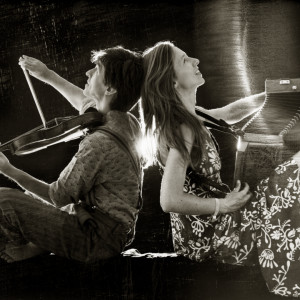

Who are Parapente700?
Parapente700 is a folk duo hailing from Portugal, but their music transcends borders.
They combine traditional songs and original compositions that lead to a fusion of current inspirations with traces of the past. A journey through Europe between French, Portuguese, Swedish, Spanish and other countries' dances. Music and dances generated by the embrace of the violin and the accordion.
With watery mazurkas, airy polskas, earthy circles and fiery scottish, the duo renews, reinterprets and creates. With a repertoire spanning many dance styles, everyone is invited to dance!
